All 18 association reruns complete. Position/filter cases completed: 252 / 252. Each nonempty case has matched fitted-c and c=0 arms. Empty subsets are explicit, not zero-error solutions. Snapshot: 2026-10-04T23:43:14+00:00.
One highest-refined-margin candidate per passing 20 ms receiver/channel window. A/B replay the historical frozen pools exactly. N scans reuse orbit-blind refinement and qualified saved calibration, restoring absolute satellite timing and top-only discovery together. This is not an isolated timing-only causal ablation, a new IQ refinement run, or held-out identity validation.
A is the original 10 MS/s reference; B and N01–N16 are 2.5 MS/s. Full scan IDs, capture times and rates are included in the coverage CSV. The added scans use the recorded 40° fixture separation.
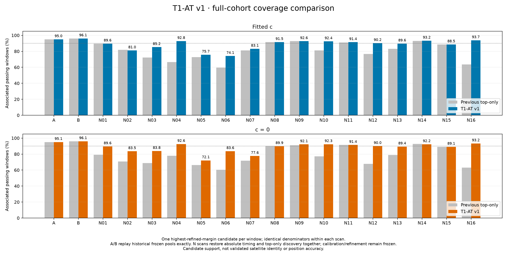
| Scan | Windows | Fitted c assigned | Δ pp | Sats | RMS Hz | c=0 assigned | Δ pp | Sats | RMS Hz |
|---|---|---|---|---|---|---|---|---|---|
| A | 3837 | 3644 (94.97%) | +0.00 | 33 | 146.4 | 3648 (95.07%) | +0.00 | 33 | 214.6 |
| B | 3602 | 3460 (96.06%) | +0.00 | 32 | 90.5 | 3460 (96.06%) | +0.00 | 32 | 179.7 |
| N01 | 2728 | 2444 (89.59%) | +0.04 | 30 | 98.0 | 2444 (89.59%) | +10.45 | 30 | 180.5 |
| N02 | 2239 | 1814 (81.02%) | -0.76 | 27 | 184.6 | 1870 (83.52%) | +12.77 | 28 | 225.4 |
| N03 | 2547 | 2170 (85.20%) | +12.96 | 30 | 138.0 | 2134 (83.78%) | +15.16 | 30 | 229.6 |
| N04 | 3428 | 3181 (92.79%) | +26.23 | 29 | 113.6 | 3174 (92.59%) | +14.76 | 30 | 235.7 |
| N05 | 3542 | 2681 (75.69%) | +3.05 | 50 | 256.3 | 2553 (72.08%) | +5.90 | 49 | 274.4 |
| N06 | 2842 | 2106 (74.10%) | +14.43 | 31 | 207.3 | 2377 (83.64%) | +23.40 | 23 | 206.8 |
| N07 | 3296 | 2740 (83.13%) | +2.00 | 38 | 241.4 | 2558 (77.61%) | +5.92 | 40 | 241.6 |
| N08 | 3069 | 2808 (91.50%) | -0.10 | 25 | 107.3 | 2758 (89.87%) | -0.20 | 24 | 220.8 |
| N09 | 3416 | 3164 (92.62%) | +0.00 | 28 | 135.2 | 3147 (92.13%) | +1.02 | 29 | 204.7 |
| N10 | 3045 | 2814 (92.41%) | +11.20 | 30 | 139.4 | 2812 (92.35%) | +15.30 | 30 | 156.2 |
| N11 | 3027 | 2766 (91.38%) | +0.36 | 27 | 105.2 | 2766 (91.38%) | +0.00 | 27 | 105.3 |
| N12 | 3065 | 2765 (90.21%) | +13.47 | 27 | 109.3 | 2758 (89.98%) | +22.28 | 27 | 162.8 |
| N13 | 2636 | 2363 (89.64%) | +6.60 | 32 | 151.2 | 2356 (89.38%) | +10.43 | 32 | 163.2 |
| N14 | 2722 | 2538 (93.24%) | +0.26 | 32 | 109.5 | 2511 (92.25%) | -0.51 | 33 | 221.3 |
| N15 | 2103 | 1862 (88.54%) | -0.05 | 21 | 117.5 | 1873 (89.06%) | +0.05 | 22 | 181.3 |
| N16 | 3070 | 2876 (93.68%) | +30.23 | 27 | 114.7 | 2862 (93.22%) | +30.10 | 28 | 228.5 |
The known roof supplies the reference and frozen rankings. Fitted-c assignments select the included windows and candidate bank in both RF arms; the discrete T1-AT selector is not rerun during position searches. The finite-set likelihood still marginalizes over the fixed satellite bank, so its soft association probabilities can change. It is not a fixed-owner least-squares objective. The frozen receiver baseline is shared, while extra receiver lines, the RF coefficient and timing are refitted. Three starts and identical bounded search budgets in each arm; best-found positions are not globally certified minima. Triangles denote the 2 km boundary, stars search ambiguity, and X unconverged results. Pending cases are labeled.
RMS filters are cumulative satellite-level cuts at ≤50, ≤100, ≤300 and ≤600 Hz, using the full fitted-c roof profile. These do not change the 600 Hz association gate or the GLRT activity threshold. All RMS and position comparisons here are in-sample diagnostics.
Roof profiles used for RMS ranking/cuts remain unconverged for B, N05, N06, N07. Those scans are marked ‡; their RMS-derived selections are provisional, even if a subsequent position search converges. The saved results are retained, not silently repaired.
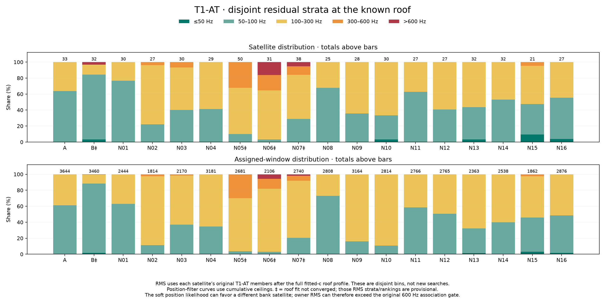
Per-satellite strata and window counts
The archived A/B chart is not overwritten. For 34 comparable case/arm pairs, evaluating the archived vectors on the new objective reproduces their stored scores to within 10−7. In 7 pairs the archived solution has a lower score than this bounded rerun (marked †). These are different local basins, not changed scoring or coverage. For B at 100%, the fitted-c score is 43,261.36 here versus the archived 43,250.92; the distances are about 1,142 m and 1,129 m respectively. A lower score is not necessarily a lower position error.
B's three RMS-ranked subsets also differ from the archive because the new roof fit changes the RMS ranking. Those six RF-arm cases are not treated as identical-input optimizer comparisons. The assignment coverage itself is unchanged.
Direct cross-evaluation audit · Earlier A/B reference with N01/N02 additions · All completed position/filter cases (CSV)
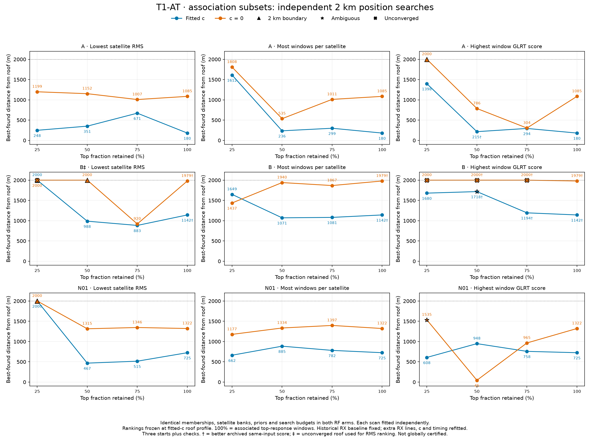
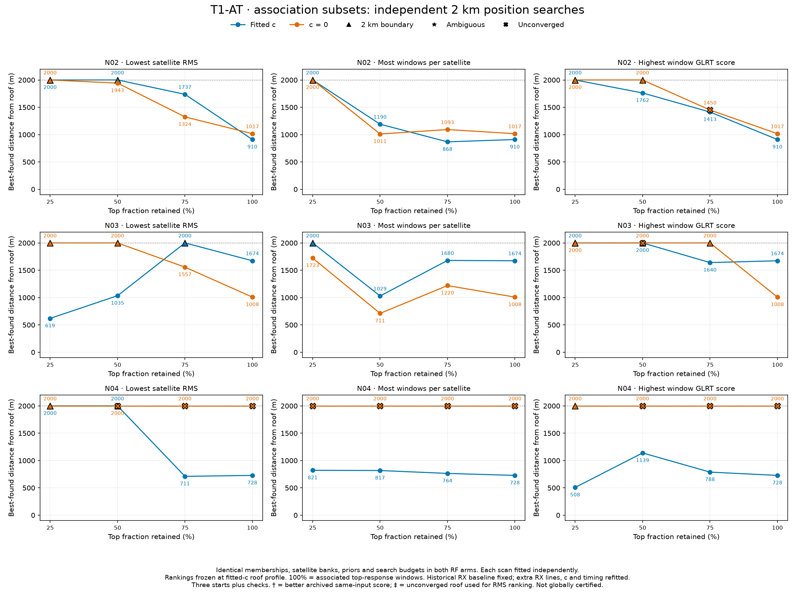
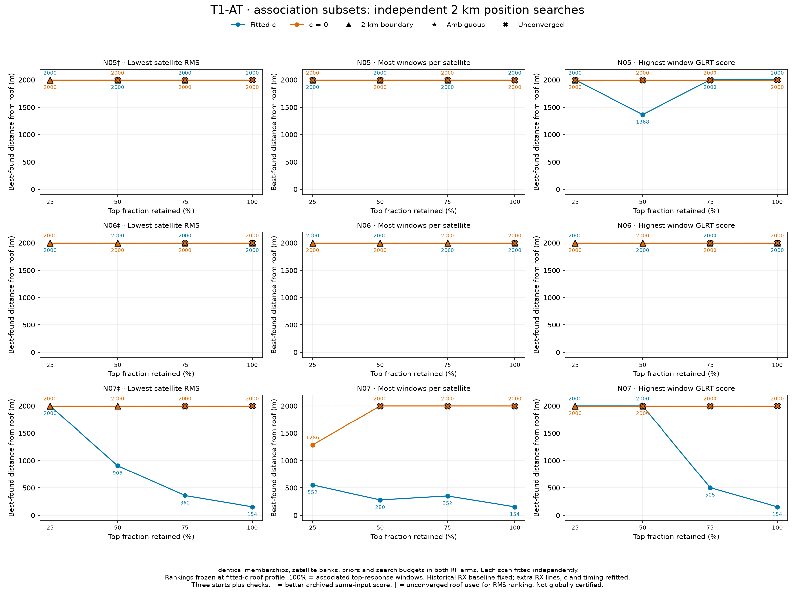
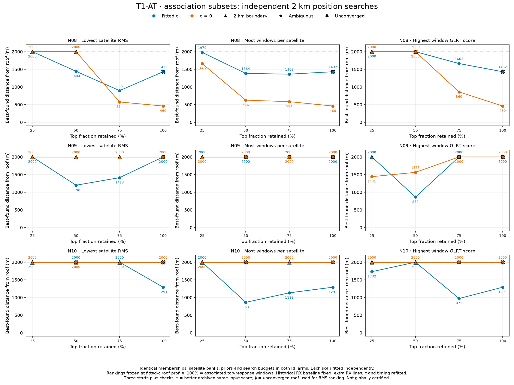
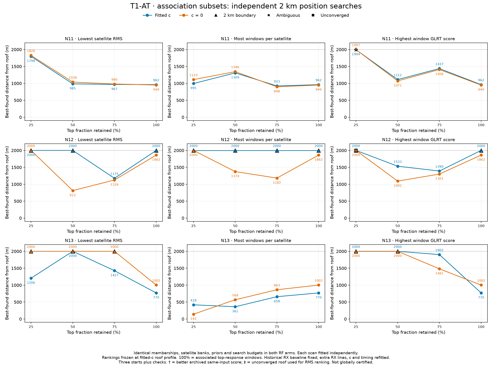
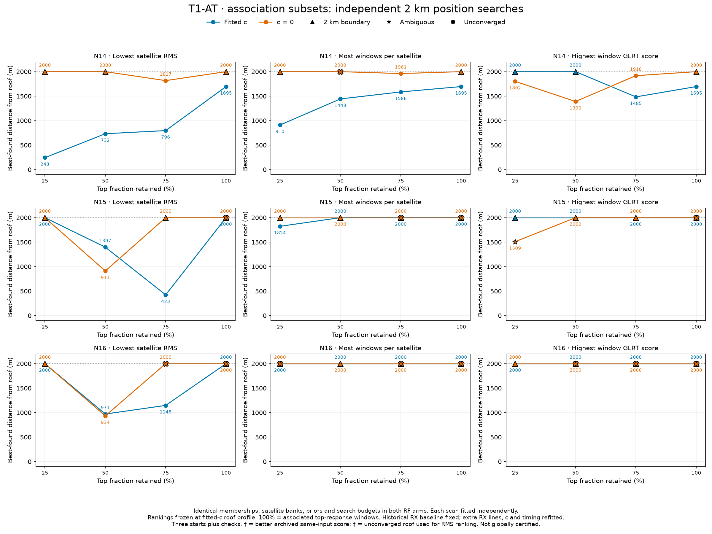
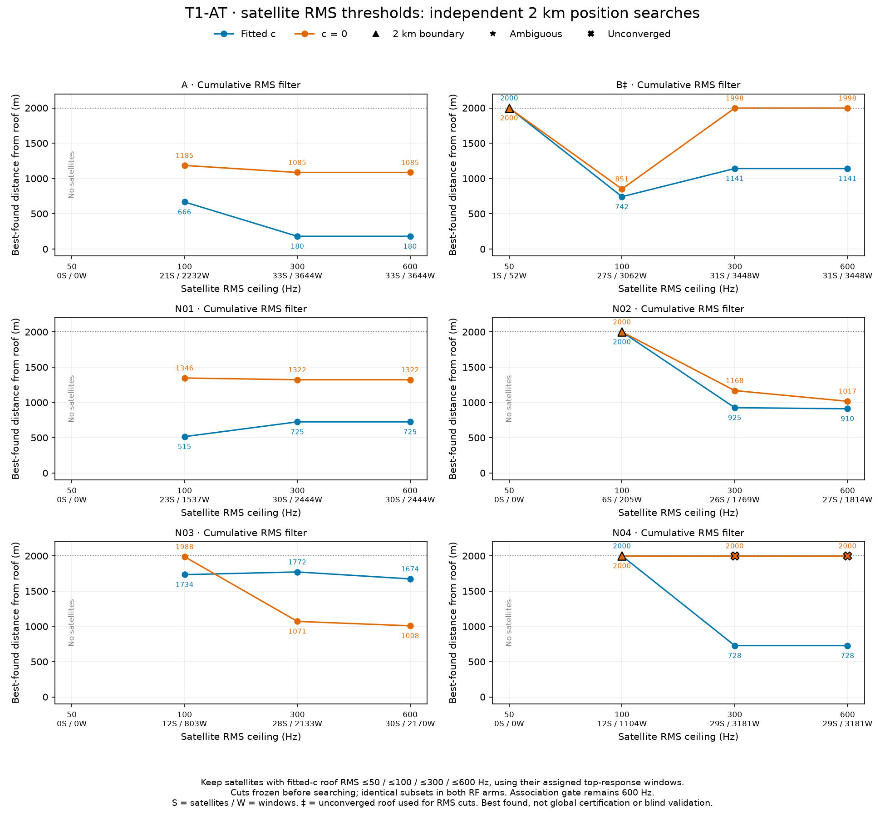
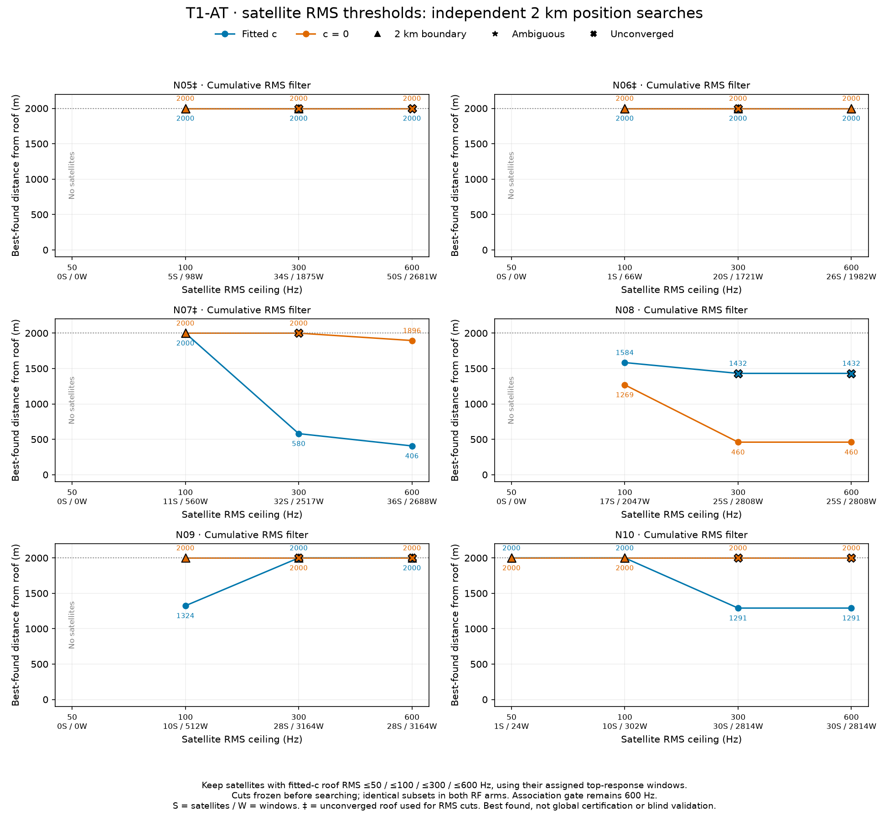
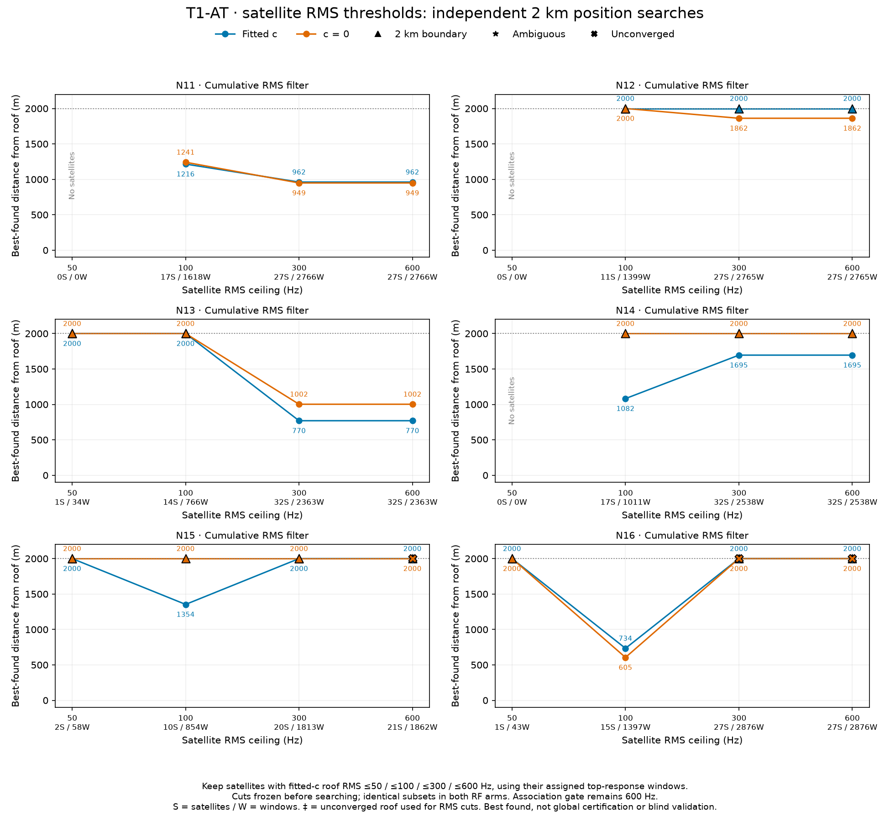
The optional --t1-at-discovery-input stage accepts qualified orbit-blind refinement,
frozen receiver/RF calibration and a full near-visible orbit bank. Runtime code selects the top response,
discovers absolute ±20 s timing hypotheses across that bank, then runs greedy + replacement with both RF arms.
It does not depend on archived report scripts. The alternative --t1-at-input accepts an already
prepared matched timing-mode pool. Neither option silently creates calibration or recollects RF data.
Outputs bind capture, analysis and prepared-input digests, use an immutable T1-AT namespace, and cache exact inputs. Timeouts are partial, never published as completed solutions. The input probe stride follows the requested analysis product. Existing default analysis is unchanged unless a T1-AT input is supplied.
Numerical verification: selection exactly matches both archived RF arms for all 18 scans (36 comparisons).
Fresh full-bank runtime discovery reproduces all 16 N scans in both RF arms: exact assigned-window sets and
satellite IDs, with residual agreement within 10−6 Hz. Sampled calibrated predictions and timing derivatives
agree to 10−7 Hz tolerance (maximum frequency discrepancy 6 × 10−11 Hz).
The standard adaptive CLI was exercised on the existing N01 capture/analysis.
Integration is committed locally as 2fcacc87d on codex/t1-at-adaptive-analysis;
78 component/regression tests pass, plus six research-runner tests. It is not deployed or pushed.
36-arm selection parity · 32-arm runtime full-bank verification · Current score/membership audit
python -m leo.cli.adaptive_hop_analysis \ --bulk-root /srv/bulk/leo \ --session-id scan-fw-0c4c127b1f80a01b \ --probe-stride-ms 120 --metrics-only \ --t1-at-discovery-input /srv/bulk/leo/t1-at-v1-replication-20261004/discovery-pipeline/N01/input.json \ --t1-at-maximum-seconds 600
Use the integration branch environment. Inputs must bind the same capture and analysis manifests; the example uses the already-qualified N01 evidence, not a template to relabel as another scan. The runtime needs no report-module imports. The report's export bridge documents how these archived research inputs were converted to the public contract. T1-AT is an explicit opt-in stage, not an automatic calibration/refinement replacement.